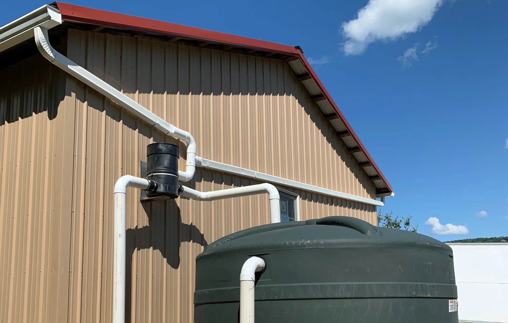
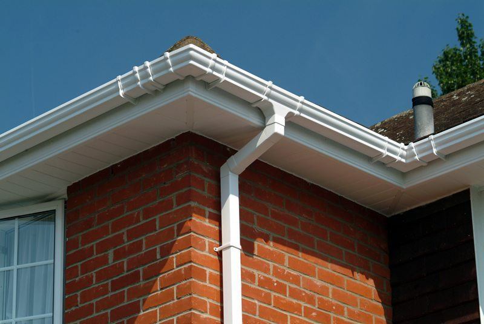

Gutter

Gutter rainwater harvesting refers to the process of collecting and storing rainwater from the roof of a building using a gutter system. This water is typically channeled through gutters and downspouts, then directed into a storage system such as a rainwater tank or barrel. The collected rainwater can then be used for various purposes, including
irrigation, landscaping, cleaning, and sometimes even for potable water after proper filtration and treatment.
Key Components of Gutter Rainwater Harvesting:
- Roof: The surface that collects rainwater. The type of roofing material can impact water quality, as some materials may leach contaminants.
- Gutters: Channels installed along the edge of the roof to collect rainwater as it flows off the roof
- Downspouts: Vertical pipes that carry rainwater from the gutters to the ground or a storage tank.
- First Flush System: A device that diverts the first flow of rainwater, which may contain contaminants like dirt, leaves, and debris, away from the storage system. This ensures cleaner water is collected after the first flush.
- Storage System: Tanks, barrels, or reservoirs used to store the collected rainwater for future use. These can vary in size and material (e.g., plastic, metal, concrete).

Benefits of Gutter Rainwater Harvesting:
- Water Conservation: Reduces reliance on municipal water supply or groundwater, conserving local water resources.
- Lower Water Bills: By using harvested rainwater for tasks like irrigation or cleaning, you can reduce your water utility costs.
- Sustainability: Provides an eco-friendly solution by utilizing natural rainfall for non-potable purposes, reducing overall water consumption.
- Flood Reduction: Collecting rainwater can help reduce stormwater runoff, which can cause flooding and erosion in urban areas.
- Energy Savings: In some regions, using rainwater for non-drinking purposes reduces the demand on energy-intensive municipal water treatment facilities.
Uses of Collected Rainwater:
- Irrigation: Rainwater is often used to water gardens, lawns, and crops.
- Landscape Maintenance: Can be used for cleaning outdoor spaces or washing cars.
- Toilet Flushing: After proper filtration, rainwater can be used for flushing toilets.
- Cooling: In some systems, rainwater is used for cooling systems or even for industrial processes.